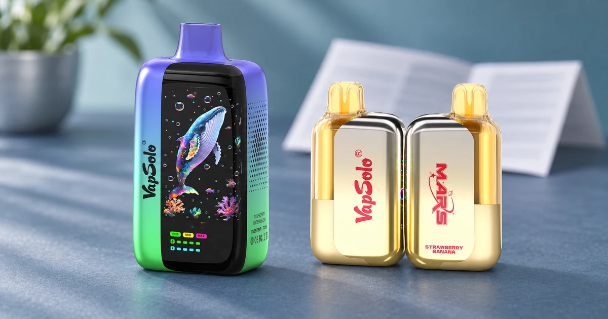

Cómo comparar modelos VapSolo antes de comprar un vaper
Antes de comprar un vaper, conviene separar cuatro preguntas: qué formato buscas, cuántos sabores quieres, qué cifra de caladas se anuncia y qué confirma la ficha de la variante actual.

Empieza por el formato, no por el número más grande
Un formato de dos sabores responde a una necesidad distinta de uno con cuatro o seis. Decide primero cuánta variedad quieres alternar. Después compara modelos que pertenezcan a esa misma familia, en lugar de mezclar cifras de categorías que no persiguen la misma experiencia.
Revisa la ficha de dos modelos concretos
VapSolo Master 70K y VapSolo Mars 50K son ejemplos de fichas separadas que deben revisarse de forma individual. La página exacta es la que permite confirmar especificaciones, variantes y condiciones disponibles, sin deducir datos de nombres similares.
| Pregunta | Dato que conviene revisar |
|---|---|
| ¿Cuántos perfiles quiero? | Número de sabores indicado por el formato |
| ¿Cómo comparar capacidad? | Caladas anunciadas, sin convertirlas en duración |
| ¿Qué variante me interesa? | Nombre completo y disponibilidad en la ficha |
| ¿Puedo asumir una función? | No; solo las especificaciones publicadas |
Orden recomendado de decisión
Del criterio general a la variante
- Define el formato y la variedad que buscas.
- Usa las caladas como una referencia de categoría.
- Lee las especificaciones de cada ficha por separado.
- Comprueba la variante concreta antes de comprar.
Qué comprobar antes de comprar vapers desechables
Antes de comprar un vaper desechable, verifica el formato, las advertencias, la variante y la página del producto exacto. No des por hecho la disponibilidad de un sabor ni una función técnica por el nombre de otra versión. La ficha actual de la tienda es la referencia para confirmar la información de compra.
Conclusión
Comparar vapers no consiste en buscar una única cifra ganadora. Un método ordenado evita promesas de duración y ayuda a elegir la ficha adecuada. Para un ejemplo de comparación por formatos, visita SIXER, Quads y Triple Pro .